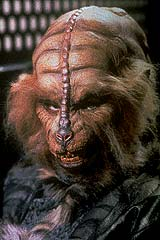
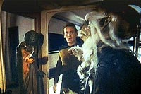
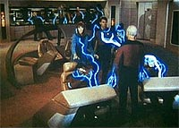
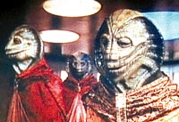

|
MANCHETE
DO EPISDIO
Histria
tenta estabelecer um enigma,
mas peca pela total falta de ritmo
Episdio
anterior | Prximo
episdio
Sinopse:
Data Estelar: 41249.3.
A Enterprise est transportando
embaixadores dos Selays e Anticans, duas espcies rivais, a uma
conferncia de paz no planeta Parlamento.
 No
caminho, a nave atravessa uma estranha nuvem de energia, que, na
verdade, consiste de entidades vivas. Uma delas capturada
acidentalmente pelo computador da nave e vai passando pelos corpos
de Worf, da dra. Crusher e, finalmente, do capito Picard, que, sob
a influncia aliengena, decide teleportar-se no espao para
unir-se s outras criaturas da nuvem.
No fim, a unio acaba no dando certo e o capito volta, sob a
forma de energia, para o computador da Enterprise. Usando a memria
do teletransporte, eles usam seus padres de energia para reconstru-lo
em forma de matria.
Comentrios:
"Lonely Among Us" uma histria feita para
criar suspense. Entretanto, o episdio destri seu objetivo pela
total falta de ritmo. A primeira metade do episdio s mostra
membros da tripulao tomando choques e agindo estranhamente. A
histria custa a comear a se desenrolar.
A premissa de inimigo criada para o episdio est solidamente
construda sobre o conceito tradicional de evitar maniquesmos,
uma marca 100% Jornada nas Estrelas. Em princpio,
temos alguma fora estranha que passa a controlar membros da
tripulao tentando assumir o controle da nave.
Depois, em uma virada de 180 graus, acabamos conhecendo a verdadeira
inteno da entidade. Tudo o que ela quer retornar ao seu lar,
de onde foi arrancada involuntariamente pela passagem da Enterprise.
E custa para que ela chegue ao homem certo: Jean-Luc Picard.
 Alis,
no momento em que a criatura aliengena comea a usar Picard como
instrumento de manobra, um suposto conflito tico se apresenta ao
capito da Enterprise. De um lado, a responsabilidade para com sua
nave e tripulao. De outro, a possibilidade potencial de explorar
a galxia na forma de energia pura.
Na histria, Picard aparentemente teria escolhido a segunda,
influenciado pelo aliengena. A verdade que o capito que todos
conhecemos nunca deixaria sua nave por qualquer coisa, por mais
tentadora que fosse.
Chegamos ento a um impasse: o roteiro est mal escrito para
Picard? Essa, sem dvida, a concluso mais bvia e direta.
Entretanto, h um vis interpretativo para a atitude da dupla
Picard e aliengena.
 Pode
ser que o capito nunca tenha estado de acordo com a criatura de se
teleportar para fora da nave em padres de energia, mas que ela,
comandando seu corpo, tenha inventado tudo isso em uma tentativa de
facilitar seu prprio acesso ao teletransporte, possivelmente o nico
modo de retornar a seu local de origem. Chegando l, ela
convenientemente se livraria do padro energtico de Picard --o
que de fato acabou acontecendo.
Um bom termo de acordo entre essas duas opes ver o episdio
sob as duas pticas: h falhas de roteiro no que diz respeito ao
comportamento do capito e tambm h subsdios para interpretar
histria sem destruir a imagem tica de Picard.
Mais uma vez, Jornada nas Estrelas faz uso de seu
equipamento predileto no que diz respeito ao quesito milagres,
eventos estranhos, inexplicveis e temas afins: o teletransporte.
atravs dele que a soluo da histria se apresenta.
Um fator histrico importante dentro do contexto de A Nova
Gerao surge neste episdio. nele que Data pela
primeira vez manifesta seu interesse por Sherlock Holmes, aps o
capito Picard ter citado o personagem.
 As
passagens mais divertidas ficam por conta da trama secundria
envolvendo a perseguio de gato e rato entre Selays e Anticams na
Enterprise. Vale aqui fazer registro ao brilhante trabalho de
maquiagem que trouxe mais essas duas espcies aliengenas ao
universo de Jornada nas Estrelas.
Citaes:
Beverly - "Klingons
are so unusual in their reactions, aren't they?"
("OS Klingons so to incomuns em suas reaes, no so?")
Delegado Selay - "Sorry, wrong species."
("Desculpe, espcie errada.")
Data - "Elementary, my dear Riker... sir."
("Elementar, meu caro Riker... senhor.")
Picard - "What the devil am I doing here?!?"
("Que diabos estou fazendo aqui?!?")
Riker - "Sounds like our captain."
("Parece o nosso capito.")
Trivia:
 O uniforme de gala da tripulao faz sua estria aqui. Quando foi
criado, o autor do desenho quis evocar os uniformes da marinha britnica
do sculo 18. A partir da segunda temporada, seu visual seria
modificado em alguns detalhes.
O uniforme de gala da tripulao faz sua estria aqui. Quando foi
criado, o autor do desenho quis evocar os uniformes da marinha britnica
do sculo 18. A partir da segunda temporada, seu visual seria
modificado em alguns detalhes.
O ator Colm Meaney, que j aparecera no primeiro episdio, "Encounter
at Farpoint", aparece novamente, desta vez como um
alferes de segurana, ainda sem nome. O ator viria ser o chefe O'Brien
a partir da segunda temporada da Nova Gerao e
em Deep Space Nine.
Marc Alaimo, mais conhecido pelo
seu marcante personagem Cardassiano Gul Dukat, aparece aqui como um
membro da raa Antican, mas no foi creditado ao final do episdio.
Ele ainda apareceria na srie como vrios outros aliengenas.
Uma das cenas em que estava o ator
coadjuvante Kavi Raz (que neste episdio interpretou o assistente
de engenharia Singh) teve que ser refilmada, mas Raz no estava
mais disponvel. A soluo utilizada foi colocar uma peruca em
uma cadeira e filmar a cena de tal forma que o personagem aparecesse
desfocado e por poucos segundos!
Estas raas voltaro a aparecer
em vrios episdios como aliengenas figurantes e no aparecero
mais juntas. Porm, no episdio do 6 ano "Tapestry",
ao fundo de uma cena que se passa 30 anos no passado, as raas
inimigas Antican e Selay sero vistas em perfeita paz e harmonia,
juntas.
Ficha
tcnica:
Histria de Michael Halperin
Roteiro de D.C. Fontana
Direo de Cliff Bole
Exibido em 02/11/1987
Produo: 008
Elenco:
Patrick Stewart como
Jean-Luc Picard
Jonathan Frakes como William Thomas Riker
Brent Spiner como Data
LeVar Burton como Geordi La Forge
Michael Dorn como Worf
Gates McFadden como Beverly Crusher
Marina Sirtis como Deanna Troi
Wil Wheaton como Wesley Crusher
Denise Crosby como Natasha "Tasha" Yar
Elenco convidado:
John Durbin como Ssestar
Colm Meaney como primeiro segurana
Kavi Raz como engenheiro-chefe assistente Singh
Episdio
anterior | Prximo
episdio
|